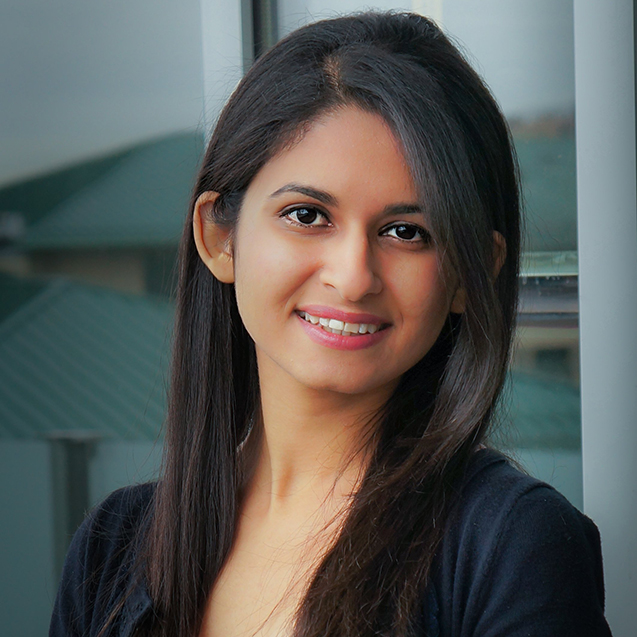
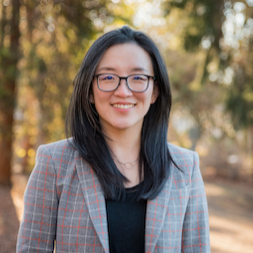

Speakers
Speakers are in alphabetical order by last name.
|  |  | ||
| Kamalika Chaudhuri University of California, San Diego |
Nika Haghtalab University of California, Berkeley |
Been Kim Google Brain |
Yi Ma University of California, Berkeley |
| Aleksander Mądry Massachusetts Institute of Technology |
Marco Pavone Stanford University |
Dorsa Sadigh Stanford University |
Milind Tambe Harvard University |
Talk Abstracts
Aleksander Mądry (09:00 - 09:30): Towards a Distribution Shift Mitigation Toolkit
For all the progress in this context, modern machine learning models remain remarkably brittle to distribution shift. Can we thus build a reliable toolkit for discovery (and mitigation) of such model failures in a systematic and automated way?
In this talk, we will present two frameworks advancing this goal. The first one is a scalable method for automatically distilling a model's failure modes as directions in the latent space. This method also enables leveraging these directions to perform synthetic data augmentations that specifically target (and thus help mitigate) these failures. The second framework constitutes a general approach to performing data-centric comparison of different models.
Milind Tambe (10:00 - 10:30): To be announced
Nika Haghtalab (11:30 - noon): Multi-distribution learning, for robustness, fairness, and collaboration
Social and real-world considerations such as robustness, fairness, social welfare, and multi-agent tradeoffs have given rise to multi-distribution learning paradigms. In recent years, these paradigms have been studied by several disconnected communities and under different names, including collaborative learning, distributional robustness, and fair federated learning. In this talk, I will highlight the importance of multi-distribution learning paradigms in general, introduce technical tools for addressing them, and discuss how these problems relate to classical and modern consideration in data driven processes.
Kamalika Chaudhuri (noon - 12:30): Can we Refute Membership inference?
Membership inference (MI) predicts whether a data point was used for training a machine learning (ML) model, and is currently the most widely deployed attack for auditing privacy of model. In this work, we take a closer look at the Membership Inference attack and whether it is plausibly deniable, and show how to construct a Proof-of-Repudiation (PoR) which empowers the dataset owner to plausibly repudiate the predictions of an MI attack. This casts a doubt on the reliability of MI attacks in practice. Our empirical evaluations show that it is possible to construct PoRs efficiently for neural networks on standard datasets.
Joint work with Zhifeng Kong and Amrita RoyChowdhury
Been Kim (12:30 - 13:00): To be announced
Yi Ma (14:00 - 14:30): To be announced
Dorsa Sadigh (14:30 - 15:00): Aligning Robot Representations with Humans
Aligning robot objectives with human preferences is a key challenge in robot learning. In this talk, I will start with discussing how active learning of human preferences can effectively query humans with the most informative questions to learn their preference reward functions. I will discuss some of the limitations of prior work, and how approaches such as few-shot learning can be integrated with active preference based learning for the goal of reducing the number of queries to a human expert and allowing for truly bringing in humans in the loop of learning neural reward functions. I will then talk about how we could go beyond active learning from a single human, and tap into large language models (LLMs) as another source of information to capture human preferences that are hard to specify. I will discuss how LLMs can be queried within a reinforcement learning loop and help with reward design. Finally I will discuss how the robot can also provide useful information to the human and be more transparent about its learning process. We demonstrate how the robot’s transparent behavior would guide the human to provide compatible demonstrations that are more useful and informative for learning.
Marco Pavone (15:00 - 15:30): Run-time monitoring for safe robot autonomy
In this talk I will present our recent results towards designing run-time monitors that can equip any pre-trained deep neural network with a task-relevant epistemic uncertainty estimate. I will show how run-time monitors can be used to identify, in real-time, anomalous inputs and, more broadly, provide safety assurances for learning-based autonomy stacks. Finally, I will discuss how run-time monitors can also be used to devise effective strategies for data lifecycle management.